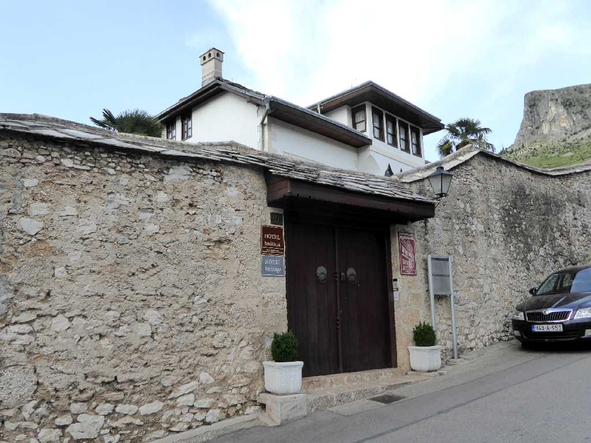
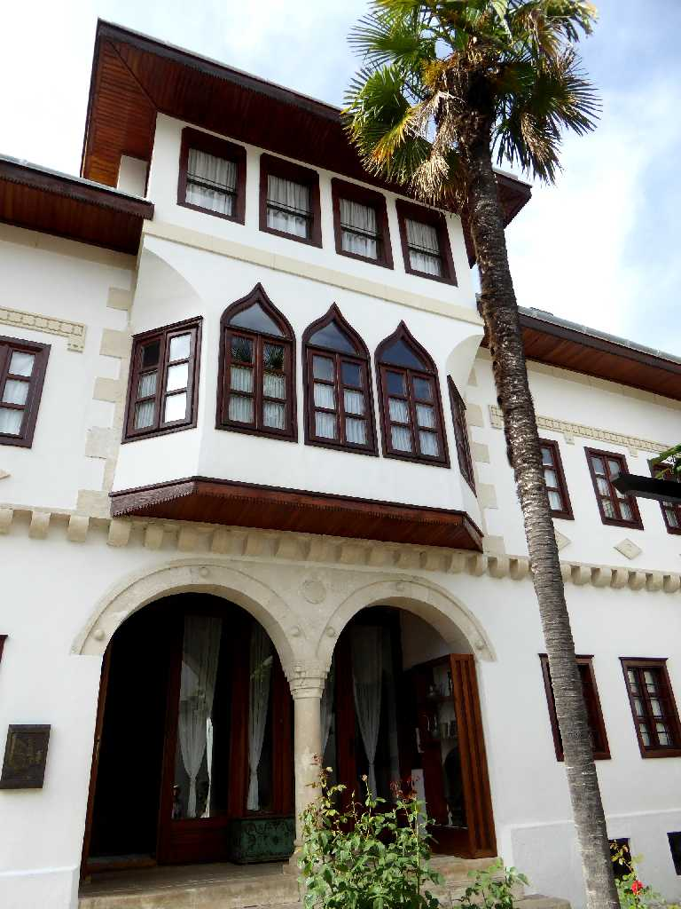
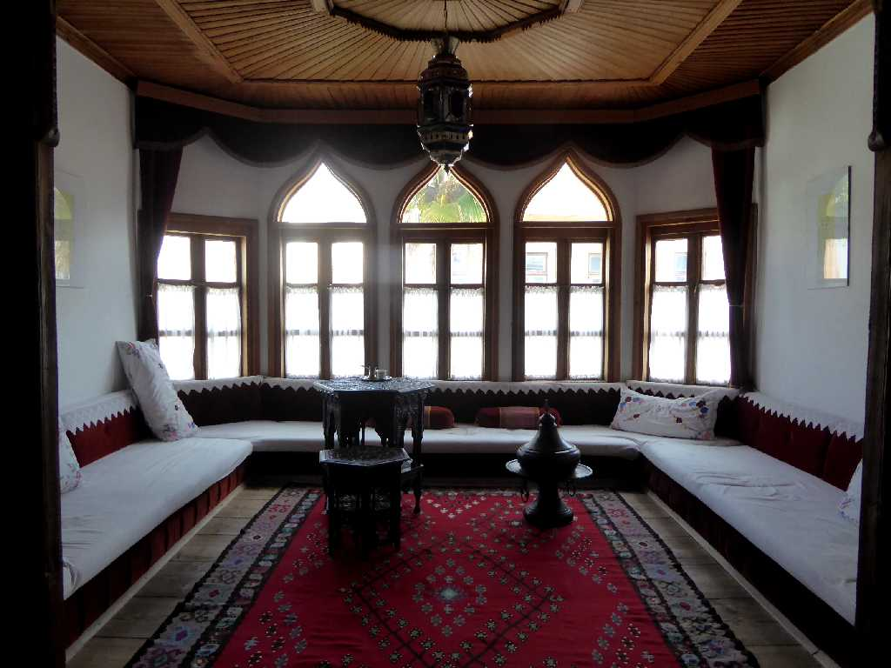
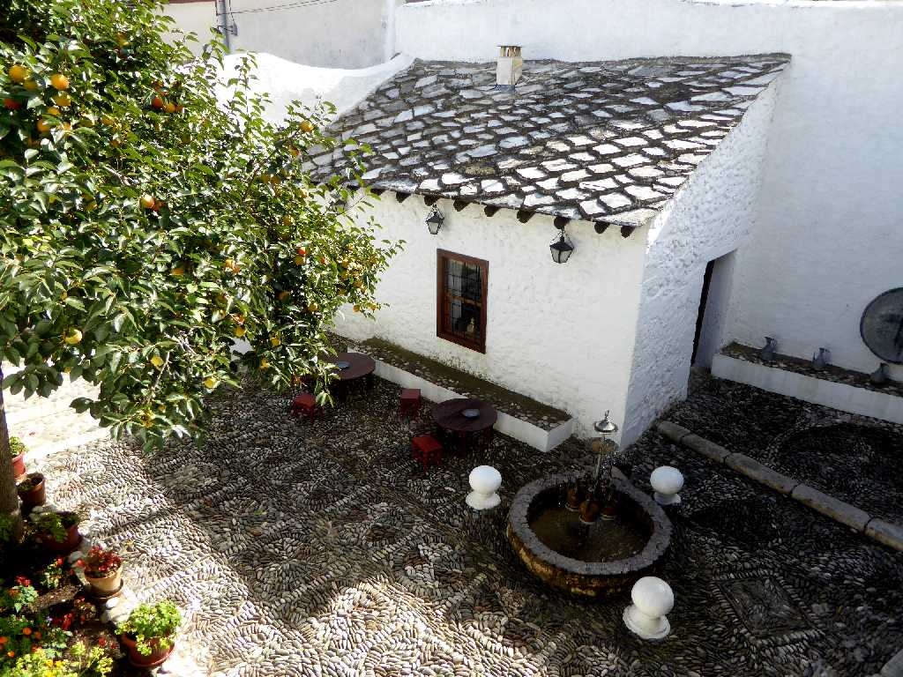
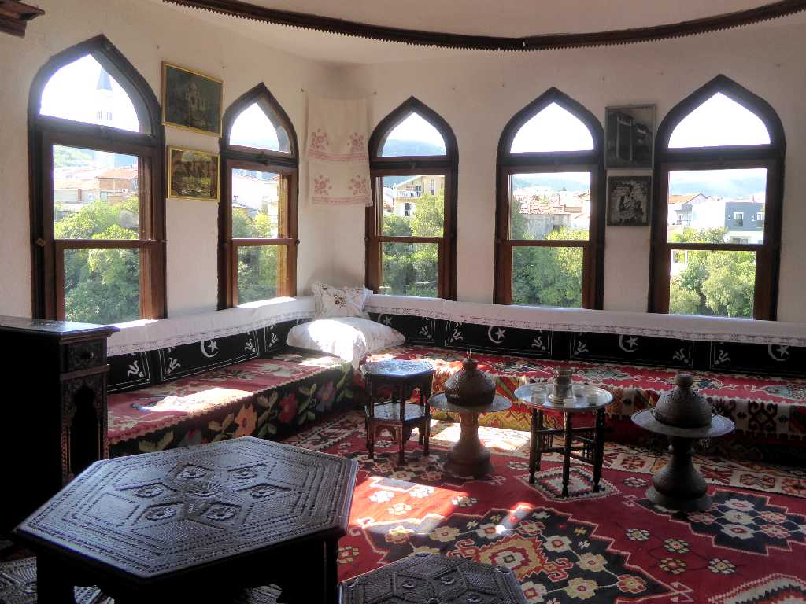

Muslibegovic House Mostar Herzegovina
イスラム教徒の豪邸

Muslibegovic House

Room Muslibegovic House

Biscevic House Mostar Herzegovina
４ヶ月ぶりの再訪問で今回はトルコ風豪邸を見学

Room Biscevic House
October 16 2016 Biscevic House